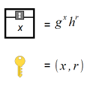

About Me
My name is Dmitry Zamkov and I'm a software developer. I started programming in 2006 with DarkBASIC and POV-Ray, but have since explored a variety of languages and paradigms including C, C#, Java, Haskell, Prolog and F#. Now, I work primarily with the .Net framework. My interests are desktop applications, simulations and 3D visualizations.
Projects
AluniteMy current undertaking: building a modern game engine from the ground up. |
|
Atmospheric ScatteringA GLSL shader for rendering photorealistic atmospheric scattering in real-time. |
|
 |
ZKPA C library that simplifies the implementation of Zero-Knowledge Proofs. This library was created under the supervision of Qun Li as part of a mentorship program. |
MandelZoomA simple real-time Mandelbrot explorer created using C# and standard WinForms. |
|
PunchClockAn employee time tracker built in C#, with data stored in a SQL database. This proprietary system is currently in use at Venuity Healthcare. |
|
XChessA 3D chess game, complete with an AI opponent. |
|
RuleSwapsA complete multiplayer card game created using NodeJS featuring rules that change during play. |
{kind=link}
{kind=link}
{kind=link}
{kind=link}
{kind=link}
{kind=link}
{kind=link}
For a full list of projects (including the ones that aren't finished or presentable), have a look at my Github account.
Other Interests
- Flying (Private Pilot since 2018)
- Photography and Photogrammetry
- 3D Printing (some CAD experience)
Contact
| dmitry94@gmail.com | |
| Phone | (608) 977 2438 |
| Github | github.com/dzamkov |